BIOGRAPHIE
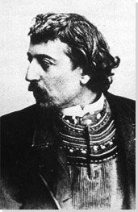
Paul Gauguin est un des plus grands peintres du XIXe siècle, dont les œuvres annoncent la peinture moderne.
Paul Gauguin naît à Paris en 1848, et passe son enfance au Pérou. Il suit ses études en France, et s'engage dans la marine, qu'il quitte en 1870. Il travaille à la Bourse de Paris, et mène une vie confortable. En 1874, il rencontre le peintre impressionniste Camille Pissaro, et s'essaye alors à la peinture. Dès 1883, Gauguin se consacre entièrement à la peinture, et produit ses premiers tableaux. En 1887, il part avec le peintre Charles Laval pour le Panama puis la Martinique, voyages qui l'inspirent beaucoup. Il peint, mais ses conditions de vie sont difficiles. Il se rend en Bretagne en 1888 à Pont-Aven où, avec d'autres peintres, il développe le synthétisme, dans le courant du symbolisme. Il peint "La Vision après le sermon" (1888). Il cohabite un temps à Arles avec Vincent Van Gogh à la fin de cette année.
Le peintre s'installe à Tahiti en 1891, cherchant à fuir la société occidentale. La nature et les vahinés l'inspirent énormément, sa peinture devient plus dépouillée, les couleurs plus vives et les contours moins dessinés. Il peint "Manao Tupapau" (1892) ou encore "Arearea" (1892). Il retourne à Paris en 1894 dans l'espoir de vendre ses nouvelles toiles, mais sans succès. Il retourne à Tahiti, et désespéré par sa solitude et la misère, il peint une oeuvre monumentale, sorte de testament : "D'où venons-nous ? Que sommes-nous ? Où allons-nous ?" (1897-1898), avant de tenter de se suicider. Il part pour les Marquises en 1901 dans l'espoir de renouveler son énergie et son inspiration. Il retrouve un temps l'impression d'un paradis, et peint "Contes barbares" (1902). Mais très affaibli et épuisé, il meurt en 1903.
 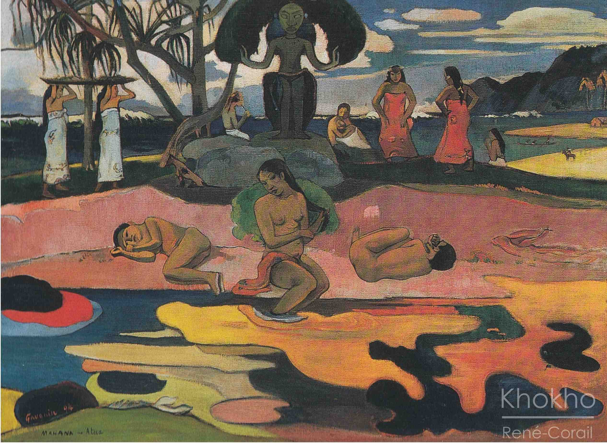
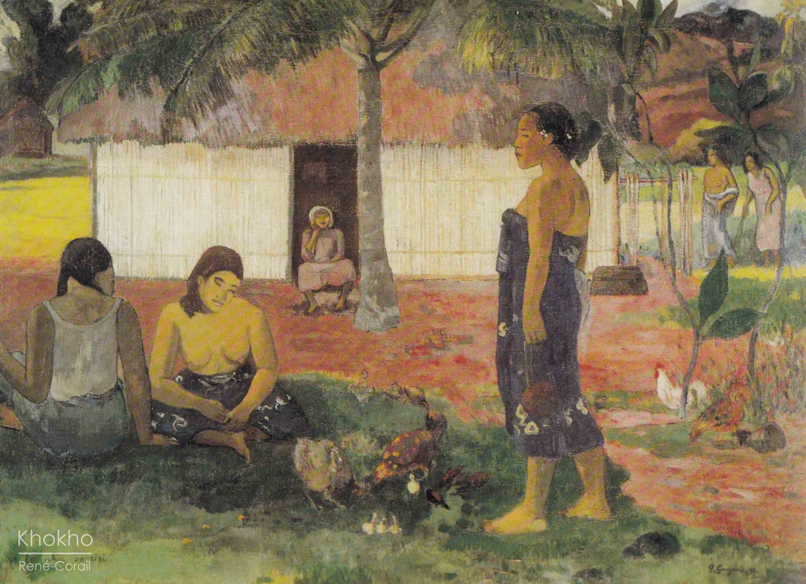
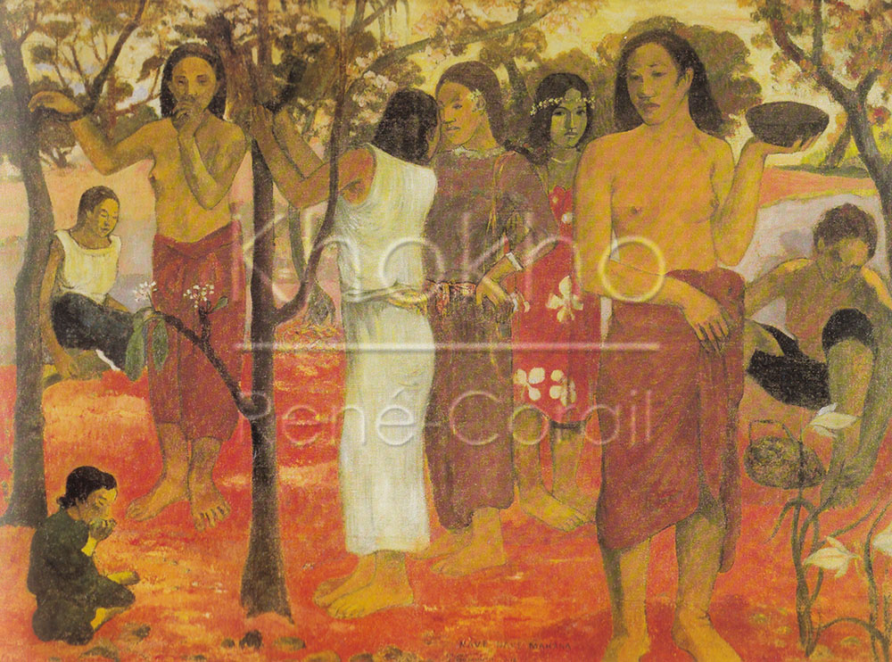
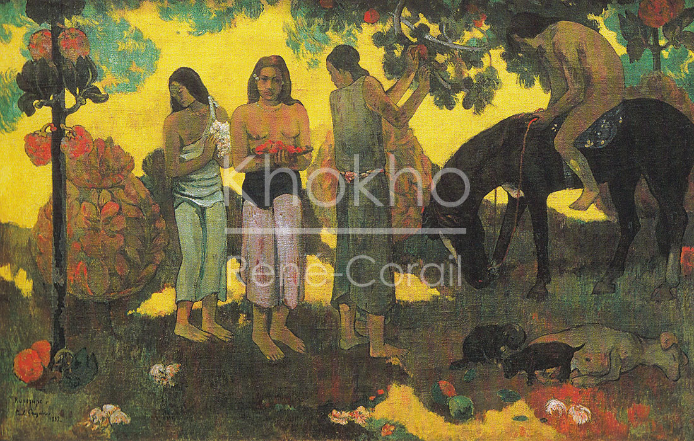
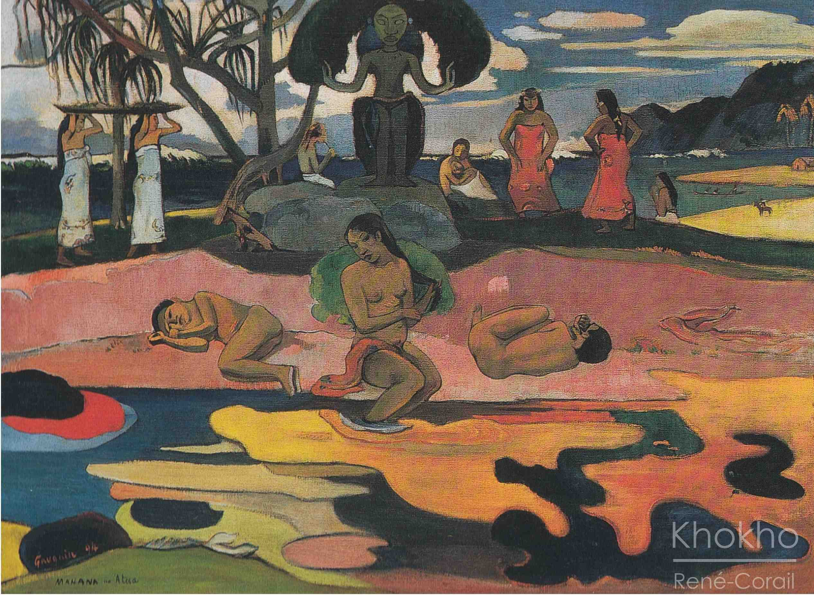
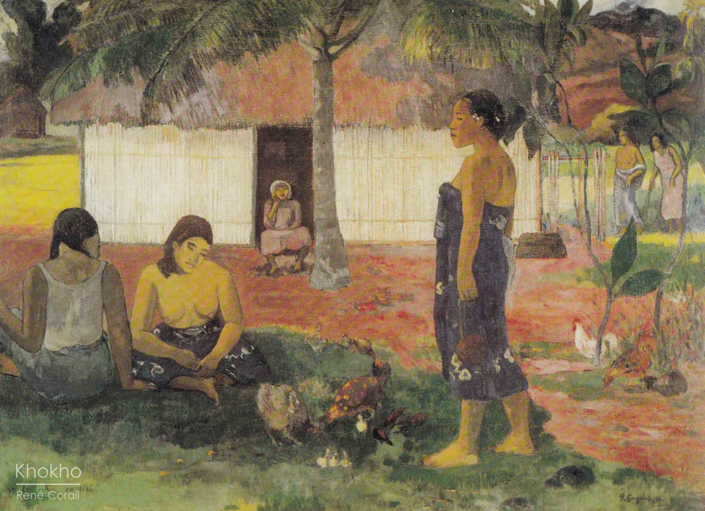
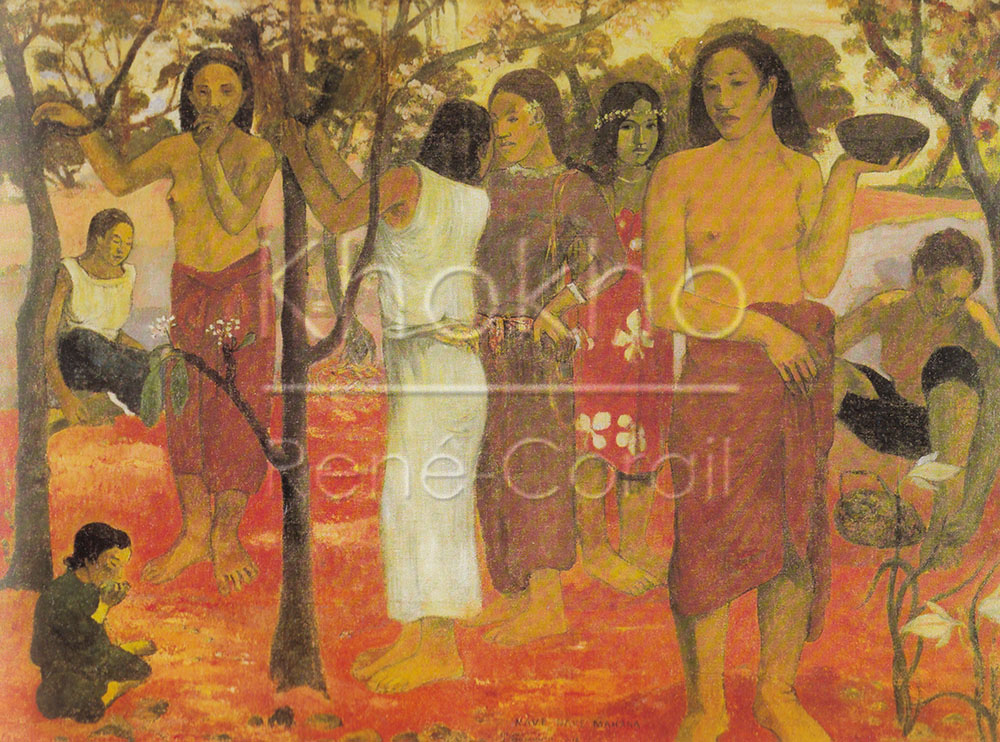
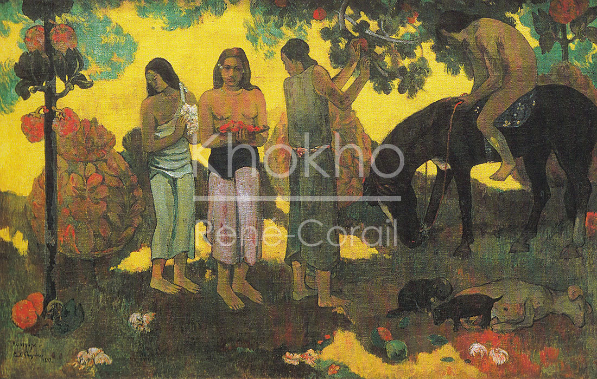
 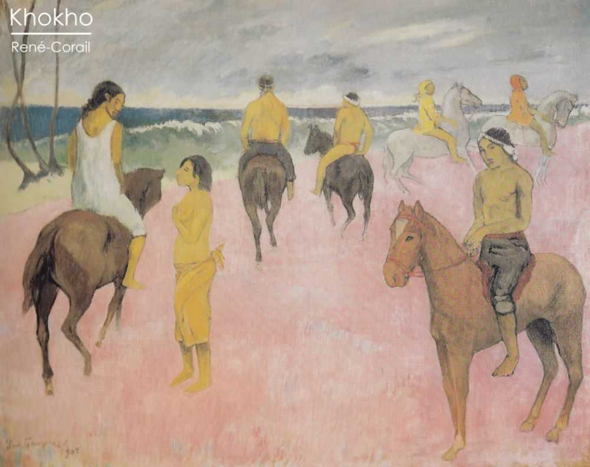
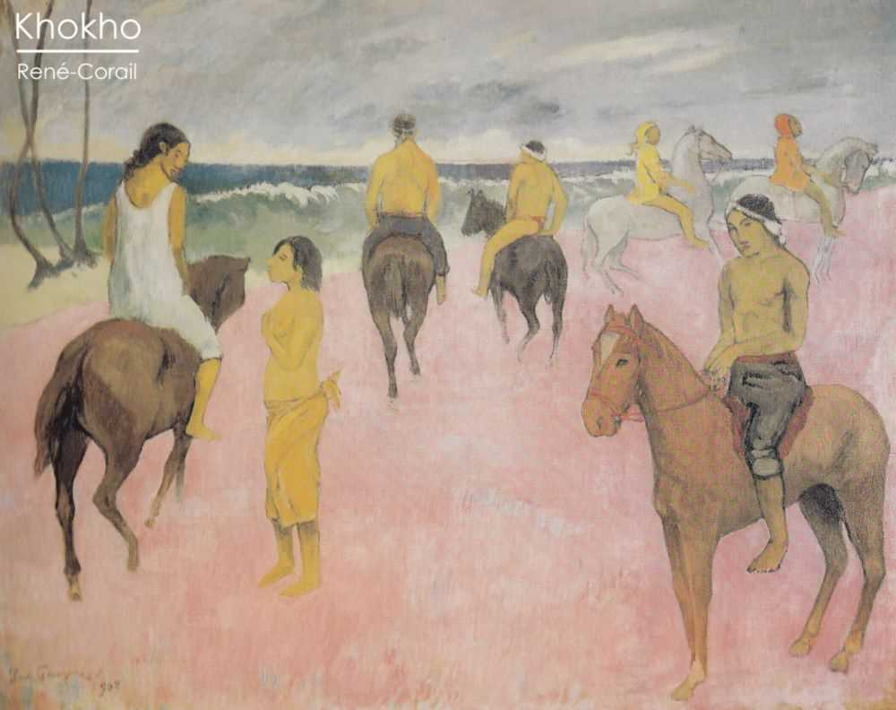